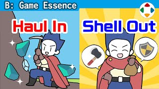
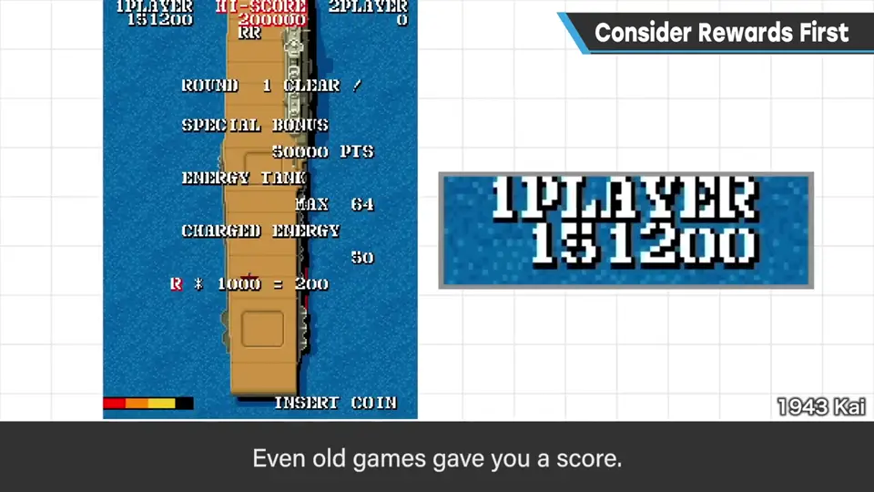
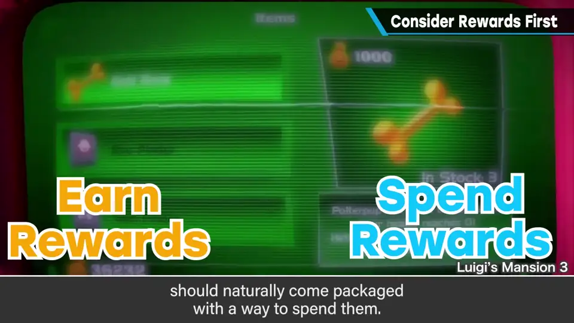
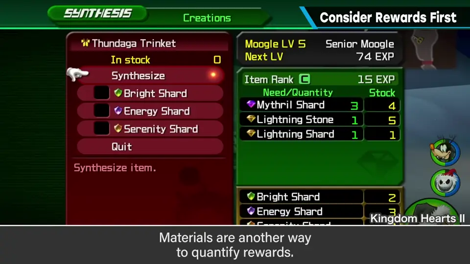
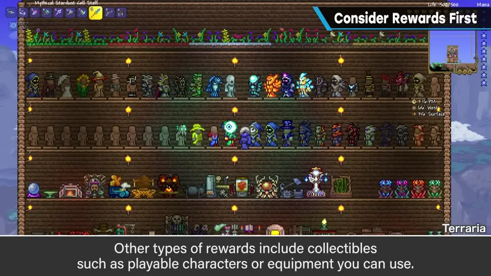
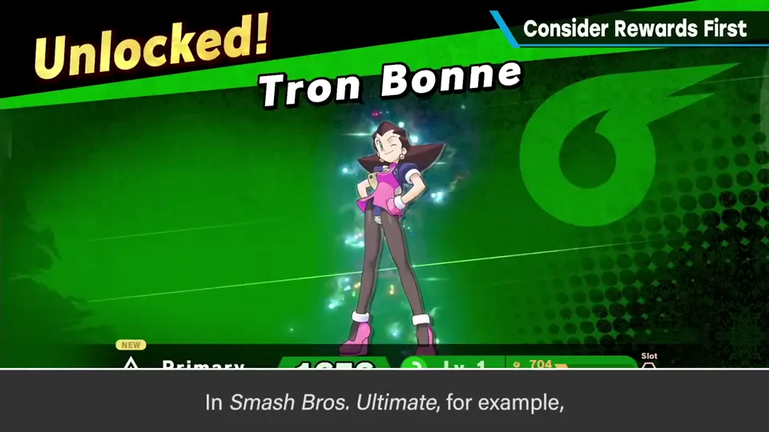

速览
尤其是打倒敌人的游戏，打倒敌人或完成任务时给回报（奖励）不可或缺。老游戏至少也有分数，但如今光这样不够，所以会有强化、金钱、经验值、技能点等回报。没有回报也能成为游戏，「能往前走」本身也是回报，但作为如今游戏的动机就差点意思。回报是推动游戏进行的欲望之源，视类型而定，但搭好游戏骨架后就可以最先考虑它。金钱、点数等会积攒的数值回报，要和消费成套——用它换来的东西没魅力或不合适，就不会好。把回报表现为素材也是好方法：能感到「赚到了」，关键是用素材做出的东西必要度要高。还有收藏类、获得可用角色或装备类的回报；积攒的数值能否交换，取决于企划的目标。作为玩家，樱井有时觉得收集回报的玩法既有趣又麻烦——一直被要求收集会有点烦。但它就是这么重要：《大乱斗 SPECIAL》如果不把命魂（Spirits）作为回报、一开始就全给，就毫无喜悦可言。让人着迷的游戏离不开回报。
1. 回报不可或缺 0:02
- 尤其是打倒敌人的游戏，打倒敌人、完成任务时给予回报不可或缺。
- 老游戏至少也有分数；但光这样不够，所以会给强化、金钱、经验值、技能点等某种回报。
- 没有这些回报也能成为游戏——能往前走本身也算回报——但作为如今游戏的动机，还差一点。

2. 获得与消费成套 0:54
包括金钱、点数在内的「会积攒的数值」型回报，和消费是一套的。如果消费后得到的东西毫无魅力、或者不合适，就不会是好回报。


数值的表现方式还有素材：收集素材做出别的东西。能获得「赚到了」的感觉；关键是做出来的东西必要度要高。这是特别有效的手段。
此外还有收藏积攒类的回报、获得可用角色或装备类的回报。积攒的数值是否能用来交换，取决于企划的目标。

3. 回报有多重要 1:44
作为玩家，樱井觉得收集回报的玩法有时既有趣又麻烦：一想到收集素材和报酬的乐趣会被要求没完没了地继续，就有点烦。
但它就是这么重要。比如《大乱斗 SPECIAL》如果不把命魂（Spirits）作为回报，而是一开始就全部齐备，那就毫无喜悦可言。

自测题
1. 为什么樱井说回报可以「最先考虑」？
回报是推动玩家继续玩的欲望之源；视类型而定，但搭好游戏骨架后就可以最先考虑。 0:40
2. 「会积攒的数值」型回报要注意什么？
它和消费是一套的：消费后得到的东西若没有魅力或不合适，就不是好回报。用素材表现时，做出的东西必要度要高。 0:54
3. 樱井用《大乱斗 SPECIAL》的什么来说明回报的重要？
命魂（Spirits）：如果不作为回报、一开始就全部齐备，就毫无喜悦可言。 2:08